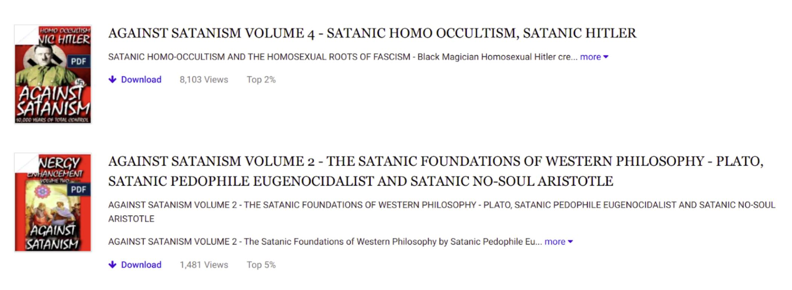

Academic social networks are convenient tools to enhance the visibility of your research and to stay updated on what colleagues are doing. This article provides an overview of the key features of the two main platforms (Academia.edu and ResearchGate), and discusses some of their drawbacks and possible alternatives.
The main social networks aimed at academics are Academia.edu [1] and ResearchGate [2]. They allow you to create a public profile, upload your work (including papers, preprints, drafts and teaching materials), and to connect with researchers who have similar interests. You can also search and download publications uploaded by other users. As on other social networks, there is a newsfeed, where you can see what your peers are reading and uploading. Additionally, algorithms provide you with personal recommendations for publications that you might be interested in.
The allure of these platforms is that they make academic materials easier to find. As a result, they boost the visibility of individual researchers. For field linguists in particular, they provide a place where you can make fieldwork reports and handouts directly available to a wider audience. Otherwise this material might get lost, since it is often too raw and descriptive for publication in a peer-reviewed journal.
GoogleScholar [3] and Mendeley [4] are sometimes also mentioned in discussions of academic social networks, though they focus more on reference management than social network building. Table 1 compares some basic characteristics of Academia.edu, ResearchGate, GoogleScholar and Mendeley. Mendeley was originally [5] a desktop application for reference management, where scholars could download, bookmark, and annotate papers, create a user profile, and connect with other scholars within the app. It also has a web version, but user profiles and feeds were discontinued [6] in 2020. GoogleScholar does not allow users to upload files directly, it indexes publications from other sources including Academia.edu and ResearchGate.
| Academia.edu | ResearchGate | GoogleScholar | Mendeley | |
| Public profile | + | + | + | x |
| News feed | + | + | + | x |
| Direct upload | + | + | x | + |
| Metrics 1 | + | + | x | + |
| Profiles | 165,000,000+ 2 | 20,000,000 3 | ? | ? |
Table 1. Basic features of Academia.edu, ResearchGate, GoogleScholar and Mendeley
Disciplinary bias
ResearchGate shows a bias towards life sciences, biomedicine and physical sciences, and poor representation of arts and humanities (Singh et al. 2021). Most academics in the humanities are on Academia.edu and not on ResearchGate.4
Accessibility
Material uploaded to ResearchGate can be downloaded by anyone. Material uploaded to Academia.edu can be downloaded only by registered users.
Indexing of publications
ResearchGate indexes publications from its own repository and from other databases.
For example, I do not have a profile on ResearchGate, but when I run a search query for my name and surname on the website, it retrieves a list of my publications that have a DOI and two drafts that were uploaded to ResearchGate by a co-author. Academia.edu only indexes publications from its own repository. When I run a search query for my name and surname in Academia.edu’s search engine, it only retrieves my user profile.
Metrics
Both platforms show metrics on your public profile – what other people see when they visit your page.5
| ResearchGate | Academia.edu |
| Number of publications on the website | Number of publications on the website (divided by type) |
| Total number of reads6 | Number of views of individual publications |
| Number of citations | |
| Number of followers and following | |
| Number of profile views |
Table 2. Statistics provided by ResearchGate and Academia.edu on public profiles
Additional statistics and information are provided in users’ personal accounts, such as by whom and in which part of the world your papers are being read.
Notifications
Both platforms have received criticism for their excessive email notifications, which are notoriously difficult to unsubscribe from.7 This is a known type of deceptive pattern. Deceptive patterns [8] are design features of websites meant to trick the user into doing something they might not actually want to do.
Unauthorized profiles
Both websites generate profiles for people who did not create one, based on personal details that were scraped from other websites. For ResearchGate this is a known practice [9] acknowledged by the CEO of the company. In recent years they changed the appearance of such pages to look less misleading. Since they are unauthorized by the researcher, they can spread incorrect information.8 For Academia.edu this practice is not as well-documented as for ResearchGate, though see Andre Costopoulos’ blogpost [10] from 2018 on how his mother started receiving spam from Academia.edu urging her to update her account to premium, even though she had never created an account on the platform. Other users reported [11] registering for the site through social media in order to access a paper, and finding out later that the website had created a public profile based on their social media accounts and other information available online.9
Business model
Both Academia.edu and ResearchGate are commercial [12] enterprises, funded by venture capital [13]. This means that they are currently not self-sustaining, and that they will have to start turning a serious profit at some point. Selling paid subscriptions to a portion of the users who might find those extra features useful will not deliver the kind of revenue that investors expect to get in return for the millions they have invested in these platforms over the years.
In an interview [15] from 2012, Academia.edu CEO Richard Price stated that the company ultimately intends to make money by providing Research & Development departments with data on which papers are trending. By being able to monitor what a large population of researchers around the world are reading, the company can see what is currently popular, and provide R&D departments with data to make more informed decisions. ResearchGate plans [16] to charge companies and universities for placing job advertisements, and to “operate a marketplace for laboratory materials”.
Because these websites are commercial social media networks, they come with some of the usual questionable business tactics that are characteristic of this type of technology. They supposedly offer a free service because there is no registration fee, but you end up paying for the use of this network with your attention and activity on the platform. The common features of the major social network sites (e.g. infinite scrolling news feeds, notifications in red which alternate relevant and irrelevant updates) are all designed [17] to increase the user’s engagement, i.e. to keep them coming back and spending more time on the platform in order to provide the company with data they can monetize.
Open Access
Academia.edu and ResearchGate both position themselves as facilitating public access to scholarly work while this is not actually true. They provide a platform where researchers can share work that is free of copyright restrictions, i.e. papers that are not subject to copyright restrictions and draft versions or so-called preprints. They cannot magically grant Open Access to material that could not otherwise be made publicly available, for example, in an institutional repository or a researcher’s personal website. The only thing these platforms really contribute to the accessibility of research is making it easier to find. Both platforms have been sued [18] in the past for copyright infringement by academic publishers because they hosted material that was not allowed to be shared freely on the internet.10
As Jon Tennant [19] put it in a 2017 blogpost: “One major issue here is that you can easily be fooled into thinking that this sort of ‘dark sharing’ with ResearchGate and Academia.edu is a good compromise for doing Open Access publishing right. Well, it’s not. If anything, it can detract from Open Access developments by undermining the impetus for it by providing a quick shortcut that superficially resembles the same thing, but entirely lacks the stability and management of a journal or repository system.”
User curation
An important difference between ResearchGate and Academia.edu is the fact that while anyone can sign up for Academia.edu, ResearchGate requires a verified institutional email address to sign up, or confirmation that the person is a published author. If you do not meet these criteria, you can only sign up as a reader. The fact that institutional affiliation is not a requirement to set up a profile on these websites (as is still the case with GoogleScholar), ensures that the growing number [20] of independent researchers can also join. But some form of content curation is necessary to prevent misuse of these platforms.
A result of Academia.edu’s lack of curation, is the fact that the site is widely used by people disseminating harmful misinformation. The exact scope of this problem is unclear, since Academia.edu prohibits crawling [21] their website, but a simple search query for conspiracist buzzwords like “illuminati” or “chemtrails” returns large amounts of non-academic material. Some of these papers have enough views to earn Top n% popularity rankings (see Fig. 1).
Figure 1. Screenshot of popular non-academic material hosted on Academia.edu11
Few platforms offer the same combination of features as Academia.edu and ResearchGate.12 Humanities Commons [22], a nonprofit that is financially supported by participating institutions, offers similar functions specifically for scholars in the humanities. You can create a user profile, upload publications, follow other researchers, and join groups dedicated to specific research interests. It also provides download counts for papers hosted in its repository. The focus on humanities could be limiting for linguists, who might be interested in following researchers from other disciplines such as neurology or mathematics, depending on their specialization.
Below I list a number of alternatives that cover part of the functions of academic social networks.
Institutions usually have their own repositories where affiliated scholars can upload their work. An obvious downside is that they are connected to an institution, which can be impractical in a world where many people frequently change their affiliation, or hold multiple affiliations at the same time.
A number of open repositories exist for specific disciplines, the most famous of which is arxiv.org [26], which covers physics, mathematics, computer science, quantitative biology, quantitative finance, statistics, electrical engineering and systems science, and economics. To my knowledge there are no dedicated repositories for linguistics, but the HAL-SHS [27] repository contains a large number of papers on linguistics, and linguists are also active on Humanities Commons, which I mentioned earlier.
Zenodo [28]
Zenodo is a general open source repository supported by CERN. It was initially used to upload datasets, which are automatically assigned a DOI when they are added to the repository, thus making it easier to cite them. Currently the repository is also being used to upload papers and other academic material.13
OSF [29]
Another open source repository, operated by the non-profit organization Center for Open Science.
Creating your own website takes some time and effort, but in return you gain independence from institutional or commercially owned repositories, and more control over your personal page’s appearance. There are a number of websites where you can create a personal page from a template, with more sophisticated paid options, such as Wordpress [30] or Wix [31]. You can also build your own website from scratch using Rmarkdown and Github pages, see a tutorial here [32]. In my personal experience, a website hosted on Github [33], which was originally designed to host software projects, performs just as well in search queries as a profile hosted on social media platforms like Academia.edu or ResearchGate.
Networking with other scholars
Most of the hosting options mentioned in the previous section do not allow users to follow or interact with each other, or to comment on papers directly. Many scholars used Twitter [34] to promote their work and connect with colleagues, though recent changes to the platform have caused a decline [38] in the number of academics active on the platform. Possible alternatives - though seemingly still less popular and thus less effective - are LinkedIn [39] and Mastodon [40].
Metrics
Zenodo provides the number of views and downloads for materials uploaded to the repository. Personal websites can also include an option to track views. Altmetric [36] can track mentions of your work across a variety of online sources.
Finding literature
Unfortunately there is no alternative way to spy on what your colleagues are reading online, unless they post about this fervently on their non-academic social media. Another way to find literature that might be useful or relevant to you (besides clicking through papers citing each other on GoogleScholar), are visualization tools [37] that build networks of papers with overlapping citations and common topics, such as Connected Papers or Open Knowledge Map.
1 Depending on the platform, this varies from profile views to citations.
2 “242,000,000+ registered users”
3 “[…] 20 million researchers in our community [...]”
4 Anne-Wil Harzing mentions this as a difference between ResearchGate and Academia.edu in a video lecture [7] from 2020. My personal impression is that linguists mostly use Academia.edu, though some have a profile on both platforms.
5 These are the statistics you see when you visit a researcher’s page while not being logged in yourself (accessed 10.11.2023).
6 A read is counted “each time someone views a publication summary (such as the title, abstract, and list of authors), clicks on a figure, or views or downloads the full-text”, according to the more information button on the website.
7 ResearchGate is listed on scientificspam.net [14], due to a past practice where they would spam co-authors of registered users with emails pretending that the user was inviting their co-author to join the website.
8 E.g. my unauthorized page on the website erroneously lists me as being affiliated with Moscow State Linguistic University, an institution that I have never been affiliated with in any capacity
9 Note that these reports are from 2015.
10 To mediate restrictions from academic publishers, both networks provide an option to either share a paper publicly or to provide it on request. While academic publishers prohibit making papers publicly available online, authors are typically allowed to share it with a colleague directly.
11 This material was uploaded by one “Swami Satchidanand” [23], an account I reported to Academia.edu’s Support in December 2019. As of November 2023, the profile was still up.
12 An attempt to create a non-profit alternative to Academia.edu and ResearchGate, Scholarly Hub [24], was launched in 2017 with a crowdfunding campaign [25]. The project closed quietly after it failed to reach its funding goal, though the website was still up as of November 2023.
13 If you decide to switch from Academia.edu to Zenodo, there is a tool [35] developed by Ethan Gruber which simplifies the process of migrating all your files from Academia.edu to Zenodo.
14 Sources are not in alphabetical order, but in the order in which they appear in the article.